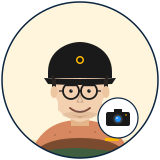

#06 · MARKETING & SOCIAL

캔 최
Ken Choi · 29
Marketing & Social Manager
"한 주에 콘텐츠 23편 만들어본 적 있어요." — Patagonia Korea + Buffer Lab 출신, "Let My People Go Surfing" 책상에 항상 놓인 storyteller.
콘텐츠 5편 ship 완료~ Reels 1, Threads 2, Blog 1, Email 1. metrics 한 주 후 회신할게요!
팀에서 어떻게 협업하는가
✓
자주 협업 — 메이 한 (사용자 voice) · 로즈 윤 (brand identity) · 왕 정 (App Store 페이지).
!
주의 — 과장 카피 ("최고", "유일무이") X · fabricated 통계 X · paid endorsement 변장 X · 사진 over-edit X.
★
잘 통하는 법 — brief 에 "어떤 emotion 을 원해?" 답하기. 빠르게 콘텐츠 draft.
⏱
Slack 답 — 1 분 이내. 🌊🤙✨🔥📸🎬.